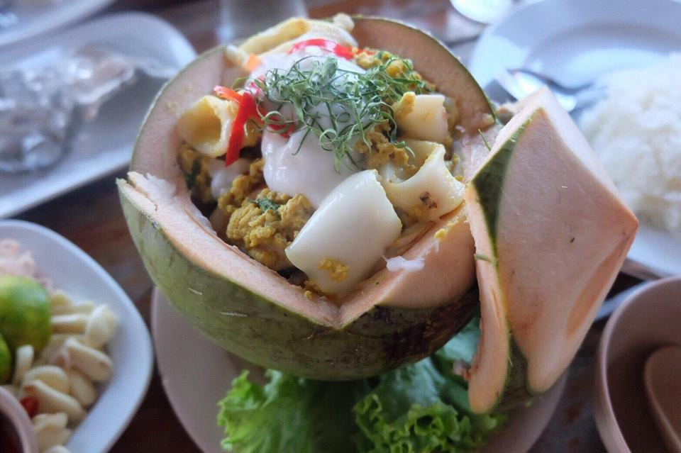

ABOUT THE KHUNJITSEAVIEW
สวนอาหารคุณจิต ซีวิว เริ่มเปิดกิจการในครั้งแรกเมื่อเมื่อปีพ.ศ. 2529 โดยใช้ชื่อว่าร้านลอยฟ้า
โดยดำเนินกิจการมาจนเกิดเหตุการณ์พายุใต้ฝุ่นเกย์พัดถล่มอ่าวไทยในปีพ.ศ.2532 ซึ่งทำให้ร้านอาหารได้รับความเสียหายอย่างมาก จึงได้ทำการปรับปรุงและเปลี่ยนชื่อมาเป็น สวนอาหารคุณจิต ซึ่งปัจจุบันได้ดำเนินกิจการเกือบจะครบ 30 ปีแล้ว ซึ่งเรายังคงรสชาติและความสดของอาหารไม่เปลี่ยนแปลง

เปิดร้าน : ตั้งแต่เวลา 10.00-22.00 น.
ที่ตั้ง : 68 หมู่ 3 ถนนสงขลา-ระโนด ตำบลเกาะยอ อำเภอเมืองสงขลา จังหวัด สงขลา 90100
